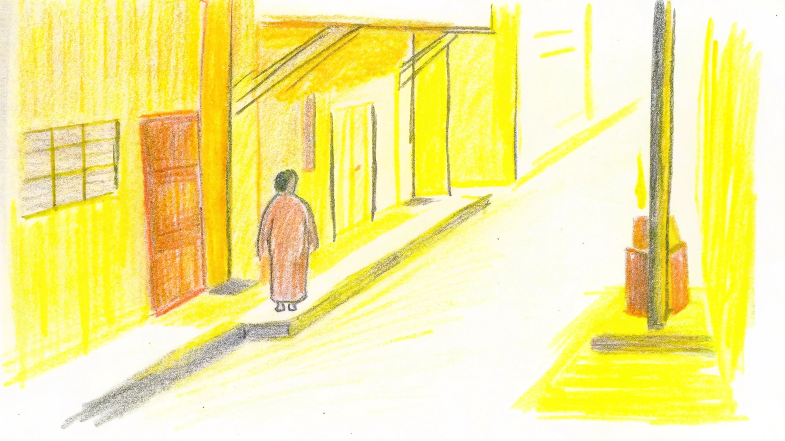

The archive is always incomplete and always taking in. Every site has people who saw something the archive does not yet name. If you are — or you know — any of them, we are always listening for your stories.
This archive takes the side of the displaced. It draws on news reports (Bangkok Post, The Guardian, Khaosod, New Mandala), legal filings, academic articles, and community testimony. Composite personas are marked as such. Public-figure activists are named directly because they have chosen to be public.
We are not a journalism outlet. We are not a court. We are a public reading room for a pattern that PMCU's communications, by design, do not name.
If you have any of the following, we would be grateful:
Visual material is more permission-sensitive than text. We will not publish anything without explicit clearance from contributors. Where active defendants are involved, we consult their legal counsel first. Sensitive material can be kept in private archive — referenced but not displayed.
Anonymous contributions are welcome. We do not require real names, contact information, or institutional affiliation. We only ask that you tell us, in your own words, what the material is and why it matters.
We do not name caretakers, market vendors, or family members who have not chosen to be public. We do not publish photographs of identifiable individuals without their consent. We do not share contact information.
We do name institutions, their senior decision-makers, and public-figure activists who have chosen to be public. That distinction is what makes this an archive rather than a directory.

You walk into a small café near Sam Yan.
The person behind the counter is Jake — an AI that helps this archive listen. A human volunteer reads everything before anything is published.